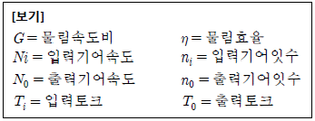
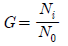
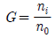
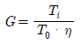
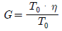

농기계정비기능사 (2015-01-25 기출문제)
1과목: 농기계정비
1. 220V의 기전력으로 22J의 일을 할 때 이동한 전기량(C)은?
- 0.1
- 10
- 20
- 2400
(정답률: 44%)

2. 기동 시 발생 토크가 크므로 기동과 정지가 번번이 반복되는 경우에 사용되는 직류전동기는?
- 복권 전동기
- 분권 전동기
- 직권 전동기
- 타여자 전동기
(정답률: 63%)
3. 3상 유도전동기의 극수가 4, 전원 주파수가 60Hz라면, 이 전동기의 동기속도는 몇 rpm인가?
- 3600
- 1800
- 1200
- 900
(정답률: 64%)
4. 후미등 및 브레이크등에 관한 설명으로 틀린 것은?
- 후미등은 라이트 스위치에 의해 점멸된다.
- 브레이크등은 브레이크 스위치에 의해 점멸된다.
- 브레이크등은 주야간 모두 점등되며, 후미등의 3배 이상의 광도를 가지고 있다.
- 브레이크등과 후미등은 각각 직렬로 접속되어 있다.
(정답률: 74%)
5. 축전지의 방전 전류를 표시한 것은?
- 정격전압/부하용량
- 부하용량/정격전압
- 충전전류/방전전압
- 방전전압/충전전류
(정답률: 57%)
6. 다음 중 전기의 도체에 속하는 것은?
- 고무
- 플라스틱
- 알루미늄
- 운모
(정답률: 85%)
7. 3상 유도전공기의 회전방향을 변경하는 방법으로 맞는 것은?
- 전동기의 극수를 바꾼다.
- 전원의 주파수를 바꾼다.
- 기동 보상기를 사용한다.
- 3상 전원 배선 중 임의의 2개 배선을 바꾸어 접속한다.
(정답률: 74%)
8. 12V용 5W의 전구와 10W의 전구를 서로 직렬로 연결하여 12V의 전원에 접속하면 두 전구의 밝기는?
- 5W의 전구가 더 밝다.
- 10W의 전구가 더 밝다.
- 두 전구의 밝기가 같다.
- 5W의 전구는 빛을 내지 못한다.
(정답률: 68%)
9. 납축전지를 방전시키면 양극판과 음극판에서 모두 생성되는 것은?
- PbO2
- 2H2SO4
- PbSO4
- 2H2O
(정답률: 58%)
10. 납축전지의 공칭전압은 얼마인가?
- 3.0
- 2.6
- 2.0
- 1.2
(정답률: 58%)
11. 8A의 전류로 12시간 사용할 수 있는 축전지의 용량(Ah)은?
- 80
- 96
- 120
- 160
(정답률: 79%)
12. 24V의 축전지에 2Ω, 4Ω, 6Ω의 저항을 직렬 연결할 때 회로에 흐르는 전류는 몇 A인가?
- 2
- 3
- 4
- 5
(정답률: 71%)
13. 기동전동기의 정류자는 브러시에 전류를 어떻게 흐르게 하는가?
- 전기자 철심으로
- 모든 방향으로
- 차단 상태로
- 일정 방향으로
(정답률: 73%)
14. 전자유도 현상에 의해서 코일에 생기는 유도 기전력의 방향을 나타내는 법칙은?
- 뉴턴의 법칙
- 키르히호프 법칙
- 쿨롱의 법칙
- 렌츠의 법칙
(정답률: 64%)
15. 전조등의 광도 측정단위는?
- cd
- W
- lm
- lx
(정답률: 70%)
16. 다음 중 후진을 하며 작업을 하여야 하는 작업기는?
- 제초 파쇄기
- 중경 제초기
- 비닐 피복기
- 심경용 구굴기
(정답률: 78%)
17. 다음 중 트랙터용 로터리에서 안전 클러치의 역할로 옳은 것은?
- 견인력을 증대시킨다.
- 기관 출력을 증대시킨다.
- 로터리 손상을 방지한다.
- 로터리 회전 속도를 증대시킨다.
(정답률: 82%)
18. 다음 중 농용 트랙터 차동 장치의 구성 부품에 해당되지 않는 것은?
- 밴드 브레이크
- 구동 피니언
- 차동사이드 기어
- 차동 피니언
(정답률: 73%)
19. 다음 중 단기통 경운기 엔진의 실린더와 피스톤을 교환할 때 반드시 검사하지 않아도 되는 것은?
- 피스톤의 무게
- 피스톤과 실린더의 간극
- 링 홈 간극과 사이드 간극
- 피스톤핀과 커넥팅로드 부싱의 간극
(정답률: 88%)
20. 다음 중 트랙터의 클러치 페달 유격은 보통 얼마 정도가 가장 적당한가?
- 5~10㎜
- 20~40㎜
- 60~75㎜
- 95~110㎜
(정답률: 67%)
2과목: 농기계전기
21. 다음 중 동력 살분무기의 리이드 밸브 점검으로 가장 양호한 것은?
- 리이드판은 몸체와 적당한 간극이 있어야 한다.
- 리이드판의 끝부분이 15° 각으로 굽어야 한다.
- 리이드판의 끝부분이 45° 각으로 굽어야 한다.
- 리이드판은 몸체와 완전히 밀착되어야 한다.
(정답률: 58%)
22. 다음 중 가스흐름의 관성을 유효하게 이용하기 위하여 흡, 배기 밸브를 동시에 열어주는 시기를 의미하는 용어는?
- 블로우 바이(blow by)
- 밸브 서징(valve surging)
- 블로우 다운(blow-down)
- 밸브 오버 랩(valve over lap)
(정답률: 61%)
23. 다음 중 동력경운기용 로터리의 경심조절은 무엇으로 하는가?
- 미륜
- 로터리 칼날
- 경운기 앞 웨이트
- 갈이축과 갈이칼 장착폭
(정답률: 73%)
24. 다음 중 기억식 변속기의 물림속도비 구하는 공식으로 옳은 것은? (단, 각각의 변수는 다음 [보기]를 따른다.)





(정답률: 60%)
25. 다음 중 브레이크 마찰판에서 단판과 다판의 구조상 특징을 비교한 것으로 틀린 것은?
- 소형으로 높은 토크를 요구하는 곳에서는 다판이 적당하다.
- 연결힘이 크고 사용빈도가 많은 용도에서는 단판이 적당하다.
- 단판은 일반적으로 가격이 고가이고, 구조가 복잡한 형식이다.
- 단판은 고에너지형으로 많이 사용되며, 외형이 크다.
(정답률: 77%)
26. 트랙터 유압회로 압력측정 및 조정을 위해 유압 측정 시 조건으로 옳지 않은 것은?
- 규정된 회전수에서 측정한다.
- 난기운전 없이 바로 측정한다.
- 경사지가 아닌 평지에서 측정한다.
- 작동유의 온도는 45℃ 전, 후에 측정한다.
(정답률: 81%)
27. 다음 중 합수율과 관련된 설명으로 틀린 것은?
- 함수율표시법에는 습량기준함수율과 건량기준함수율이 있다.
- “습량기준함수율”이란 물질 내에 포함되어 있는 수분을 그 물질의 총 무게로 나눈 값을 백분율로 표현한 것이다.
- 어떤 물질의 함수율이 증가되고 있다는 것은 그 물질 내의 수분함량이 감소된다고 말할 수 있다.
- 함수율을 측정하는 방법으로는 오븐법, 증류법, 전기저항법, 유전법 등을 사용한다.
(정답률: 76%)
28. 다음 중 콤바인 작업 시 벼 이삭 아래 부분이 잘 털리지 않을 때 조절해야 하는 부분은?
- 공급 깊이 조절
- 배진판 조절
- 반송체인 조절
- 풍량 조절
(정답률: 67%)
29. 다음 중 PTO 클러치를 사용하는 경우로 가장 적절한 것은?
- 가공 시 부하를 줄 때
- 감속비를 증대시킬 때
- 견인력을 증대시킬 때
- 동력의 단속이나 발진할 때
(정답률: 56%)
30. 다음 중 쟁기에서 마모가 가장 잘 되는 부품은?
- 원판
- 발토판
- 보습
- 지측판
(정답률: 66%)
31. 다음 중 보행형 산파이앙기에서 식부깊이 조정 방법으로 알맞은 것은?
- 주행 속도를 조절
- 플로트의 높낮이 조절
- 묘턉재대 높이의 조절
- 묘탑재대의 이송 속도를 조절
(정답률: 74%)
32. 동력경운기를 변속기내 윤활유 없이 주행을 했을 때, 발생하는 고장에 대한 설명으로 틀린 것은?
- 소음이 크게 발생된다.
- 베어링과 기어류가 과열된다.
- 주행이 점차 어려워진다.
- 변속기 회전력이 증가된다.
(정답률: 85%)
33. 다음 중 V 벨트의 종류가 아닌 것은?
- A형
- B형
- M형
- N형
(정답률: 72%)
34. 농용 기관 정비 시 경합금 피스톤핀을 피스톤에서 분해, 조립할 때 다음 중 가장 적절한 방법은?
- 해머로 타격한다.
- 치공구를 사용한다.
- 프레스를 이용한다.
- 피스톤을 가열 후 조립한다.
(정답률: 59%)
35. 동력경운기의 조향 클러치(side clutch)로 사용되는 것은?
- 맞물림 클러치(dot clutch)
- 디스크 클러치(disk clutch)
- 유체 클러치(fluid clutch)
- 기어 클러치(gear clutch)
(정답률: 76%)
36. 동력경운기에서 브레이크 드럼은 규정 값과 비교하여 얼마 이상 마모되면 교환하는가?
- 0.1㎜ 이상
- 1.0㎜ 이상
- 5.0㎜ 이상
- 10.0㎜ 이상
(정답률: 56%)
37. 다음 중 농용 트랙터에서 동력취출장치(PTO)축의 표준 회전수로 옳은 것은?
- 350rpm
- 540rpm
- 780rpm
- 1240rpm
(정답률: 83%)
38. 다음 중 동력경운기가 주행 중에 이상음이 발생할 때의 원인과 가장 거리가 먼 것은?
- 베어링 마모
- 발전코일 손상
- 변속갈고리 마모 및 변형
- 기어 이(tooth)면의 손상 및 마모
(정답률: 71%)
39. 다음 중 경운기의 엔진을 분해하여 실린더 마모량을 점검하려고 할 때 가장 적절하지 않는 것은?
- 실린더별 측정개소는 6개소이다.
- 실린더 보어게이지로 내경을 측정한다.
- 과대 마모 시 언더사이즈 수정 값으로 보링한다.
- 최대내경값에 표준내경을 빼면 마모량이 된다.
(정답률: 64%)
40. 다음 중 기관에서 윤활유 소비가 과대한 원인에 해당되는 것은?
- 피스톤링의 마멸
- 라디에이터의 기능약화
- 기관의 과열
- 조기점화
(정답률: 73%)
3과목: 농기계안전관리
41. 다음 중 트랙터 동력취출장치(PTO)와 연결되지 않는 작업기는?
- 모워(mower)
- 쟁기(plow)
- 로터리(rotary)
- 브로드캐스트(broadcaster)
(정답률: 60%)
42. 다음 중 조기점화의 원인과 가장 거리가 먼 것은?
- 과열된 밸브
- 점화플러그의 전극
- 퇴적된 카본
- 냉각된 밸브
(정답률: 78%)
43. 구입한 농용 트랙터의 취급설명서를 읽어보니 앞바퀴의 표준 공기압이 2㎞/cm2이었다. 타이어 게이지로 바퀴에 공기를 보충할 때 약 몇 psi로 주입하여야 하는가?
- 14psi
- 20psi
- 28psi
- 40psi
(정답률: 57%)
44. 다음 중 다목적 관리기에서 50시간 사용할 때마다 분해하여 점검하여야 하는 것은?
- 밸브 간극
- 변속 기어의 마모
- 연료 여과망
- 주클러치 벨트 유격
(정답률: 75%)
45. 다음 중 압력식 라디에이터캡을 사용하는 라디에이터 내부의 게이지압력과 냉각수온도로 가장 적당한 것은?
- 압력 : 0.3~0.9kgf/cm2, 온도 : 110~120℃
- 압력 : 0.3~0.9kgf/cm2, 온도 : 80~90℃
- 압력 : 3.0~9.0kgf/cm2, 온도 : 110~120℃
- 압력 : 3.0~9.0kgf/cm2, 온도 : 90~100℃
(정답률: 44%)
46. 전기 용접 시 주의할 점으로 틀린 것은?
- 차광안경을 사용할 것
- 우천 시 옥외작업을 하지 말 것
- 벗겨진 코드 선은 사용하지 말 것
- 신체를 노출시킬 것
(정답률: 91%)
47. 안전모나 안전대의 용도 설명으로 적합한 것은?
- 신호기
- 작업능률 가속용
- 추락 재해 방지용
- 구급용구
(정답률: 93%)
48. 재해의 원인별 분류에서 인적 원인에 해당되는 것은?
- 빈약한 정비
- 작업장소의 밀집
- 부적당한 속도로 장치를 운전
- 지나친 소음
(정답률: 84%)
49. 공작기계의 안전 사용법으로 틀린 것은?
- 드릴에 상처나 균열이 있는 것은 사용하지 않는다.
- 산반작업 시 이송을 걸은 채 기계를 정지시켜야 한다.
- 숫돌교환은 지정된 사람만 하도록 한다.
- 드릴 탈착은 회전이 완전히 정지한 후 행한다.
(정답률: 77%)
50. 전기 용접기 설치 장소로 부적절한 곳은?
- 수증기, 습도가 높지 않는 곳
- 진동이나 충격이 없는 곳
- 유해한 부식성 가스가 없는 곳
- 주위의 온도가 -10℃ 이하인 곳
(정답률: 92%)
51. 방진안경을 착용하지 않는 작업은?
- 연삭작업
- 선반작업
- 용접작업
- 셰이퍼작업
(정답률: 83%)
52. 운반기계에 의한 운반 작업 시 안전수칙으로 틀린 것은?
- 운반대 위에는 사람이 타지 말 것
- 미는 운반차에 화물을 실을 때에는 앞을 볼 수 있는 시야를 확보할 것
- 운반차의 출입구는 운반차의 출입에 지장이 없는 크기로 할 것
- 운반차에 물건을 쌓을 때 될 수 있는 대로 중심이 위로 되도록 쌓을 것
(정답률: 94%)
53. 농기계의 안전사항으로 적합하지 않은 것은?
- 동력 경운기 운반작업 시 차폭은 최대로 좁히고, 타이어의 공기압은 좌우가 같도록 한다.
- 양수기에서 벨트의 교환은 엔진정지 상태에서 실시한다.
- 콤바인 포장작업 시 손으로 탈곡작업만 할 경우 공급체인에 주의해야 한다.
- 이앙기의 점검정비는 클러치를 끊고 실시한다.
(정답률: 65%)
54. 다음 용어에 관한 설명 중 틀린 것은?
- 재해란 안전사고의 결과로 일어난 인명과 재산의 손실을 말한다.
- 안전관리란 재해로부터 인간의 생명과 재산을 보호하기 위한 계획적이고 체계적인 활동을 말한다.
- 사상(私傷)이란 어느 특정인에게 주는 피해 중에서 과실이나 타인과의 계약에 의하여 업무수행 중 입은 상해이다.
- 안전사고란 고의성 없는 불안전한 행동이나 조건이 선행되어 일을 저해하거나 능률을 저하시키며 직간접적으로 인명이나 재산의 손실을 가져올 수 있는 사고이다.
(정답률: 81%)
55. 연삭기의 안전작업 방법으로 틀린 것은?
- 연삭숫돌 설치 전 외관검사를 실시한다.
- 숫돌교환 후 사용 전에 3분 이상 시운전 한다.
- 정상 작업 전에는 최소한 1분 이상 시운전하여 이상 유무를 파악한다.
- 작업자는 숫돌정면에 서서 작업한다.
(정답률: 77%)
56. 콤바인 사용 시 주의 사항으로 틀린 것은?
- 운전 조작 요령을 숙달시킨 후에 운전해야 한다.
- 탈곡기 내부 확인은 엔진을 정지시킨 후 한다.
- 언덕을 오르내릴 때는 각 레버 및 클러치 조작을 한다.
- 급유 또는 주유 시에는 엔진의 시동을 정지한다.
(정답률: 91%)
57. 동력경운기 조작 시 안전 사항으로 틀린 것은?
- 직진 주행 중에는 조향 클러치를 사용하지 말 것
- 로터리 작업 중 후진할 때는 경운 변속레버를 중립에 둘 것
- 경사진 작업장을 오를 때 기어변속을 빠르게 실시 할 것
- 고속 주행 시에는 원칙적으로 조향 클러치 사용을 삼가 할 것
(정답률: 80%)
58. 농기계의 매일점검 사항에 해당되는 것은?
- 연료 및 윤활유 점검
- 밸브의 간극 조정
- 기호기의 청소
- 소음기 청소
(정답률: 79%)
59. 다음 중 안전관리조직의 형태에 속하지 않는 것은?
- 감독형
- 직계형
- 참모형
- 복합형
(정답률: 50%)
60. 컨베이어의 작업 시작 전 필수점검 사항으로 틀린 것은:
- 컨베이어 건널 다리 설치 유무
- 비상정지장치 기능의 이상 유무
- 이탈 방지장치 기능의 이상 유무
- 낙하물에 의한 위험 방지 장치 설치 유무
(정답률: 80%)